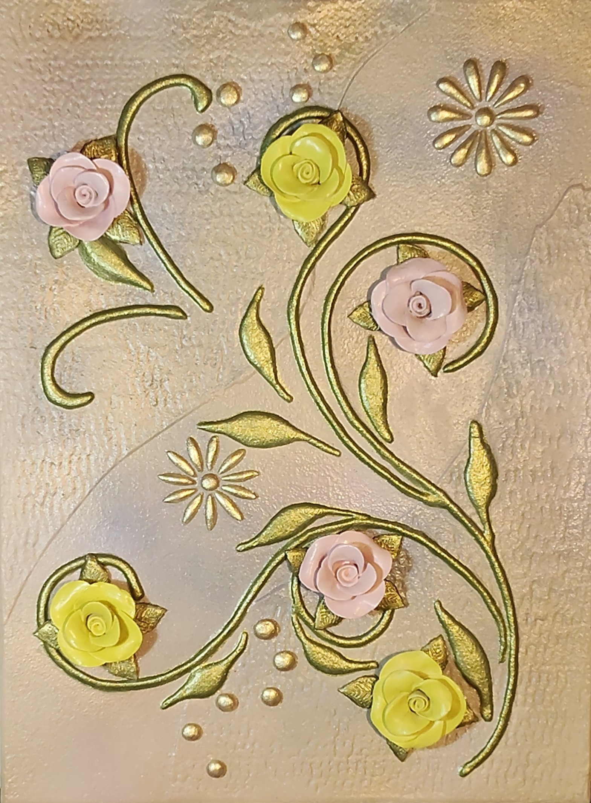

NICOLETA FILIP ART
ROSALES 2
Rosas rosadas y amarillas se distribuyen entre tallos curvos, hojas doradas y pequeños motivos ornamentales sobre un fondo texturizado.
Sobre la obra
La composición reúne rosas en dos gamas cromáticas, enlazadas por tallos sinuosos y hojas estilizadas. Los detalles circulares y las pequeñas flores ornamentales amplían el ritmo decorativo.
Presentación artística
El relieve de las rosas aporta volumen y protagonismo, mientras el dorado de tallos y hojas dibuja un recorrido continuo por la superficie. El contraste entre rosa suave y amarillo luminoso da identidad a la pieza.
Ficha técnica
- Dimensiones
- 30 × 40 cm
- Soporte
- Madera
- Técnica
- Pasta de relieve, pintura y acabados metalizados; composición floral en relieve.
- Categoría
- Floral
Si deseas recibir información sobre esta obra, puedes solicitarla directamente.
SOLICITAR INFORMACIÓN →